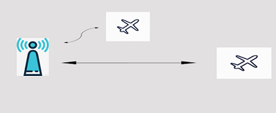

DBS9X mini 数传
12 may 2020
DBS9X 是高度集成的OEM数传模块，其具有超小的体积和重量仅 3.7 g 等优点。可以像芯片一样方便于用户集成到自己的产品中.
DBS9X 覆盖902 – 928 MHz频段的高性能900MHz ISM频段无线电调制解调器。
它专为需要最佳无线电链路性能的远程串行通信应用而设计。
同步多点网络 DBS9X 可以构建成一个同步网络，网络内的数传可以进行相互通信 。 相比普通单一用户数 传，网络结构的数传 也 可以进行 >40KM的长距离数据传输 . 且仅4g的重量不会对飞行造成负担。 对于无人机行业 以同时控制 多 架无人机，进行同时作业。可以 极大 节约时间，提高工作效率。 我们已经实现对5架无人机的控制，如下示意图。 网络通信示意图
多机控制示意图
应用场景
1、同步作业
同步作业场景下，只使用同一个地面站控制，两架无人机按照预先规划的路径同时作业
互不干扰。情景示意及数据传输方式如下图
2、循环作业
在一架无人机需要返回 Home 进行补给时，另一架无人机可以及时赶往进行
替换。保证作业进行，且不会相互干扰。如下图。

3、差分GPS组网
同步网络 数传 也可以实现，以一个地面基准站 上传给送多路 的差分数据 至天空流动
站。
4、携带差分gps的飞机
同步网络 数传 也可以实现，以一个地面基准站 上传给送多路 的差分数据 至天空流动
站。
参数
频率范围：902- 928 MHz
输出功率：1W（+ 30dBm），以1dB步长可控（+/- 1dB @ = 20dBm典型值）
空中数据传输速率：12、56、64、100、125、200、224、500和750 kbit / sec（用户可设置，默认为64kbit）。
UART数据传输速率：1200、2400、4800、9600、19200、38400、57600、115200、230400、460800、1M波特（用户可设置，默认57600）
接收灵敏度：低数据速率，高数据速率（TBA）时> 121 dBm
尺寸： 21.9 mm x 31.5 mm x 1.0 mm。
重量：3.7克
电源：标称值为+5 V（最小+3.5 V，最大+5.5 V），最大功率下约为800 mA峰值。
温度 范围：-40至+85摄氏度，经测试可在-73至+123摄氏度下运行。
硬件特点
AES数据加密。
完全ESD保护+过滤-每个IO端口均受到保护和过滤。已通过认可的测试实验室的CISPR 22初步辐射测试。
2个RP-SMA RF连接器，分集切换
1瓦（+ 30dBm）发射功率。
> 20dB低噪声放大器。
RX SAW滤波器
新型LNA具有更高的增益和更高的IP3，适用于高干扰环境。
完全ESD保护+过滤-每个IO端口均受到保护和过滤。已通过认可的测试实验室的CISPR 22初步辐射测试。
软件功能跳频扩频（FHSS
透明的串行链接
点对点或多点。
通过用于本地无线电的简单AT命令进行配置，通过远程无线电的RT命令进行配置。
用户可配置的串行数据速率和空中数据速率
纠错例程，Mavlink协议框架（用户可选）。
Mavlink无线电状态报告（本地RSSI，远程RSSI，本地噪声，远程噪声）
实时基于分组自动切换天线分集。
据无线电温度自动调节占空比，避免过热
接口
天线：2 x RP-SMA天线连接器–可以选择只连接一根天线
串行：逻辑电平RS232（+ 3.3v标称值，+ 5v耐压）
功率：+ 5v，~800mA最大峰值（在最大发射功率下）。
GPIO：6个通用IO（具有数字，ADC和PWM功能）。
合规性
FCC第15.247部分（跳频和数字调制有意辐射器）
AS / NZS 4268：2012（无线电设备和系统–短距离设备）
软件功能